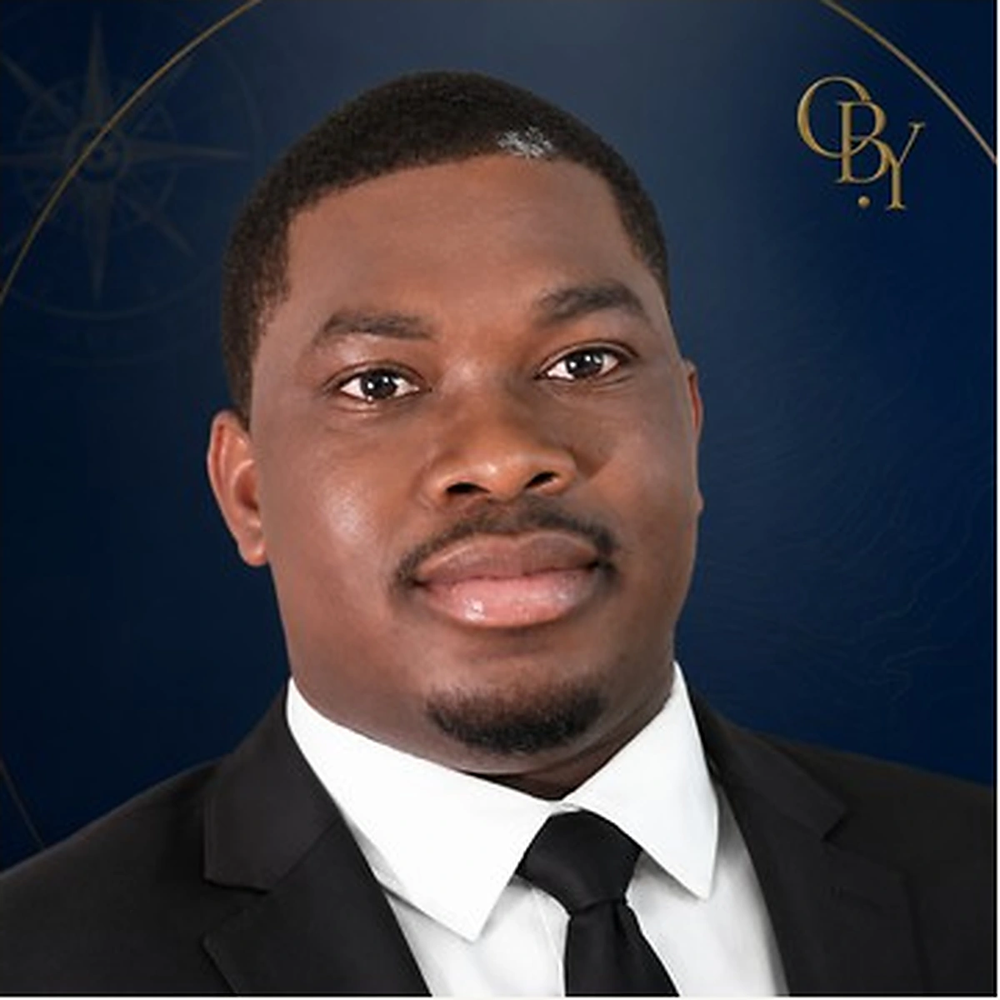

Une immersion institutionnelle internationale
Stage avec bourse au Tribunal international du droit de la mer, à Hambourg.

De la Côte d’Ivoire à la Méditerranée, du droit aux terrains, une trajectoire construite pour comprendre les transformations maritimes, relier les disciplines et agir avec méthode.

Mon parcours s’est construit à la rencontre du droit public, du droit international, de la géographie du littoral, de la médiation, de l’innovation et de la prospective.
Ce chemin n’est pas une addition de formations. Il est né d’une même question : comment comprendre les vulnérabilités, les usages, les conflits, les responsabilités publiques et les transformations des territoires, puis transformer cette compréhension en analyses utiles, en transmission et en capacité d’action ?
Du droit public au littoral, des institutions maritimes à la recherche appliquée, puis à la médiation et à l’innovation : chaque étape élargit la manière de lire les enjeux.
La formation initiale en droit public et le travail sur la préservation de la zone côtière en droit ivoirien installent les premiers liens entre normes, environnement, aménagement et littoral.
Les expériences liées au CIAPOL, au SEP-CIM AEM, au Port Autonome d’Abidjan et à la DGAMP nourrissent une lecture de l’action de l’État en mer, de la coordination administrative et de la gouvernance maritime.
Le stage avec bourse au Tribunal international du droit de la mer et les Cours de l’Académie de droit international renforcent l’ouverture vers les institutions et le règlement des différends maritimes.
Les contrats, l’arbitrage, la négociation, le commerce international et l’expérience en cabinet d’avocat relient les enseignements juridiques aux exigences de rédaction, de veille et de pratique professionnelle.
Le Master Géographie, Aménagement, Environnement et Développement, le M2 COAST et l’environnement PROTEUS consolident la lecture territoriale des usages, vulnérabilités et trajectoires d’adaptation.
Le parcours en médiation et négociation en droit des affaires, prolongé par la médiation dans le commerce international puis par un approfondissement institutionnel en espace OHADA, ouvre vers les modes amiables de règlement des différends. L’innovation, la propriété intellectuelle et Pépite Provence complètent ce versant par la prospective et la structuration de projets à impact.
Ce parcours se prolonge de trois manières distinctes : la recherche, la transmission et la contribution professionnelle. Chacune a sa page.
Rechercher & produire · Enseigner & accompagner · Analyser & contribuer
Bourses, financements de stage et accompagnements ont soutenu plusieurs moments du parcours, de la mobilité internationale à la recherche appliquée et à la structuration de projets.
Stage avec bourse au Tribunal international du droit de la mer, à Hambourg.
Financement de trois mois dans l’environnement AMIDEX / SoMuM / TELEMMe / Aix-Marseille Université, en lien avec les axes littoral, Méditerranée et vulnérabilités côtières.
Accompagnement dans le cadre du Statut national d’étudiant-entrepreneur et de Pépite Provence, autour de la structuration d’initiatives reliées au parcours.
Une page dédiée rassemble les principaux appuis qui ont accompagné la mobilité, la recherche et la structuration du parcours.
Au-delà des formations et des travaux, certaines responsabilités et appartenances disent aussi une manière de travailler : servir, organiser, apprendre collectivement et rester connecté à plusieurs communautés professionnelles et intellectuelles.
Avant d'arriver dans certains lieux, il faut accepter de servir dans l'ombre : apprendre à écouter, organiser, préparer, soutenir et tenir une exigence de travail sans chercher à occuper la lumière.
Au sein de l’AEJCI — Association des Étudiants Juristes de Côte d’Ivoire —, les responsabilités exercées comme secrétaire général adjoint du Bureau national puis secrétaire général, ainsi que le rôle de greffier lors de concours de procès simulé, ont nourri une culture de l’organisation, de la rigueur, du service collectif, de la responsabilité et de la pratique juridique.
Alumni du programme de stage du Tribunal international du droit de la mer depuis juin 2019 ; parcours également marqué par l’AJAIF, l’AAPDI et, d’avril 2018 à décembre 2020, l’AFNU-Aix.
Fondateur de l’ONG Protégeons Notre Littoral en août 2016 et fondateur de l’APELCI en juin 2013 : deux engagements qui ont contribué à structurer son rapport au littoral, à l’environnement et à l’organisation collective.
La méthode associe textes, institutions, territoires, usages et acteurs. Elle cherche d’abord à comprendre où se situe réellement l’enjeu, puis à mobiliser les disciplines utiles et à restituer une lecture claire.
OUAGA Bokoua Yao développe un parcours interdisciplinaire à l’interface du droit de la mer, de la géographie littorale, de la gouvernance maritime, de la médiation et de l’innovation. Son travail relie Afrique, Europe, Méditerranée et Golfe de Guinée.
OUAGA Bokoua Yao construit une trajectoire académique et institutionnelle qui articule droit public, droit international, droit de la mer, géographie littorale, environnement, médiation, innovation et prospective. Ses travaux portent sur la gouvernance maritime, les vulnérabilités littorales, les modes amiables et les dynamiques Afrique–Europe–Méditerranée–Golfe de Guinée.
Recherche, expertise, enseignement, intervention ou projet : un premier échange permet d’identifier les points de rencontre entre le sujet, les besoins et les compétences mobilisables.